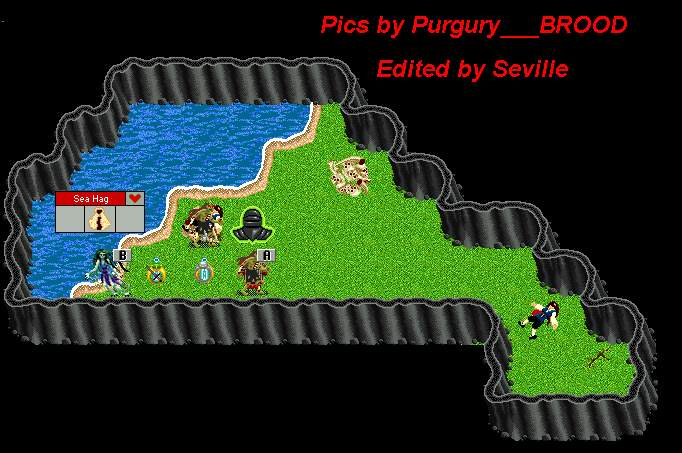

| Sea Hag Lair |
 |
| The home of a very bad lady. Newbies STAY OUT! Only crits that think that they are ready should come here. From stairs in Red Dragon Lair by Volcano Town, walk East thru wall to secret passage and jump down hole to fall into lair. See the corpse laying there? That could be you. |
| Back to Cobrahn. |